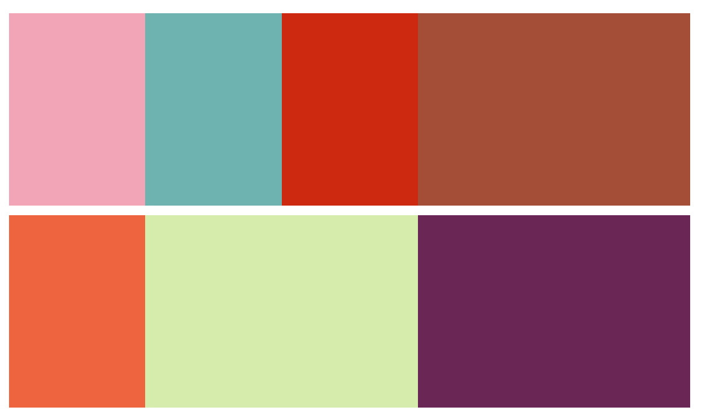

Programming as a coping mechanism
2021
I've been sorting through my dropbox, and one of the folders there is simply called "code". It contains a mildly amusing assortment of tiny tools that helped me cope with mundane tasks by providing a way to constructively procrastinate, and sometimes (almost never) actually save time on them.
On to the contents of the mostly useless useful toolbox.
Pound Yen continues being boring in this hourly update
My job right out of university was in a TV department of a Forex company. One of our products - or shows - was an hourly summary of currency price fluctuations. Like a 3-minute video with charts in the background and me or my colleagues talking about "pound yen being calm in the so and so timeframe". And we had to record these for all major currency pairs every hour. You'd be right to imagine one quickly ran out of imagination and different ways of saying the same boring thing.
So I present to you the synonim-suggestion-thingy (2010).
{kind=link}
You roughly know what text you'll want to record. So click the appropriate terms, and get a helpful output with synonyms, which you can re-roll by clicking them. Unless they consist of multiple words. Then syntax error :)
Escaping the graveyard shift with boxes

Recording hourly and 24/5 is a team effort. We worked shifts. And we often argued about who gets what shift. My then teamlead, who was French, would mutter something along the lines of "oooh putane n'est pas possible!" (I don't know French), and claim his freshly made schedule, where he coincidentally gets all the best times, and I'm stuck doing graveyard shift again, is the only possible arrangement.
So, naturally, I decided to make scheduling software. I implemented it by making an HTML page with different color inline-blocks of variable width. They would fall into neat 24h lines and nicely illustrate all possible schedules. Team lead was not amused. Still got graveyard shifts.
Sadly, that code seems lost. So here, have this photo layout generator (2014) using very similar boxes and "logic" instead. (Refresh it a couple of times.)